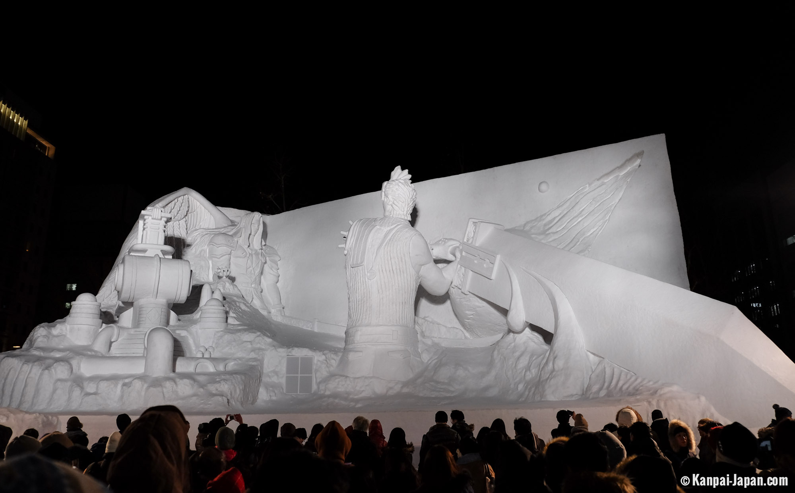

Yuki-Master
Yuki Matsuri is the Japanese name of the snow festival that occurs every year in Sapporo, the capital city of Hokkaido Island in northern Japan. For seven days in February, a large number of visitors travel to Sapporo to admire the two hundred snow sculptures and ephemeral statues displayed in the city's several districts.
